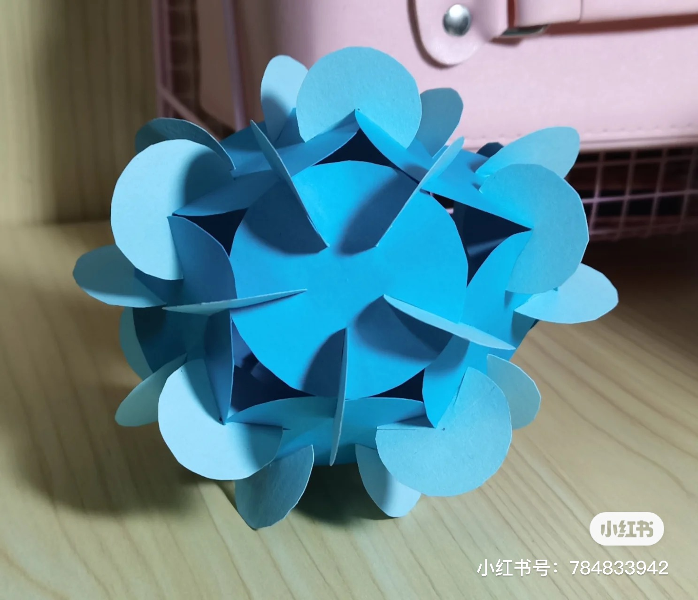
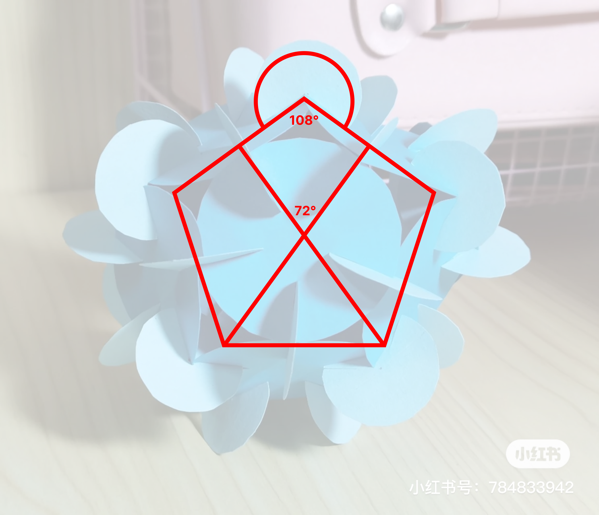
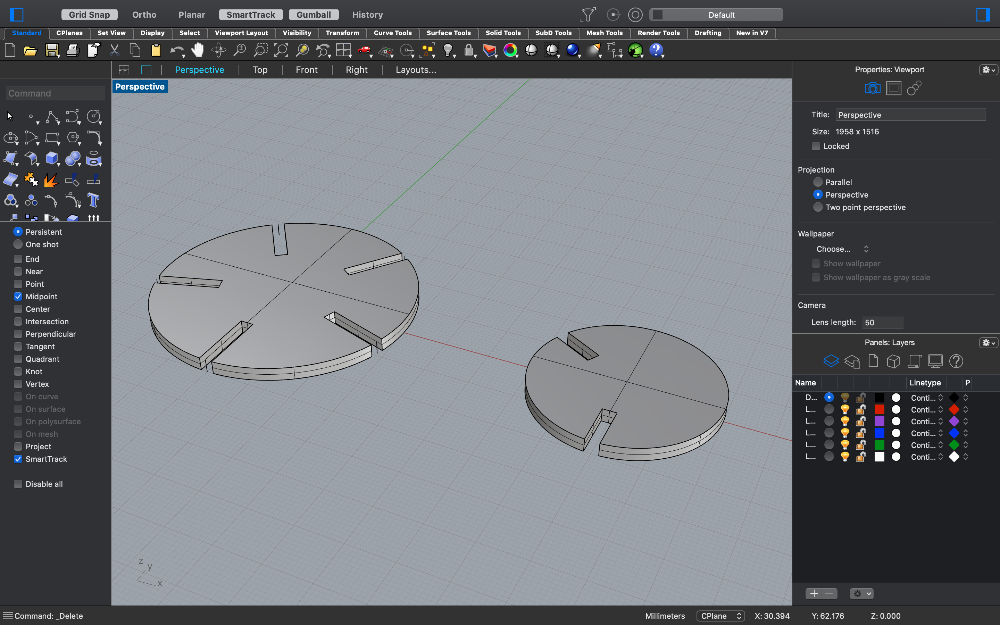

Assignment 1: Modelling and Laser Cutting
By Sherry Wang
Here is the finished and assembled piece for assignment 1:

I came across this picture while searching on the Internet for some inspirations:

The source file can be found via the watermark or from this link: http://xhslink.com/5iHYqk
Using this picture and my Math major in college, I determined the degrees of each circle (two in total)

Then I found some cardboards and measured the thickness of them. I realized that different places have slightly different thickness, ranging from 3.3mm to 3.9mm.
I also recalled Junchao's reminder that the laser might burn away some material, so I decided to use 3.0mm as the width of my gaps.
Once all data are figured out, I began drawing the shapes in Rhino.
The two shapes are similar, combining a circle and some rectangles together and then trimming down.
I used something I learned from Junchao's demo video, which was command "ArrayPolar". This allowed me to quickly drew symmetrical rectangles spreading equally across the circle.
I also extruded the shapes to get a clearer feeling of the finished pieces.

On the laser cutter, I used settings:
I test cutted a few pieces and then finished the rest.
And finally for the last step, I assembled everything together and it looked great!
Acknowledgements:
My math teacher in middle school for teaching me how to calculate polygon's angle degree Technicians at the MILL for helping me set up the laser cutter Junchao, Nadya and others for support on Discord!